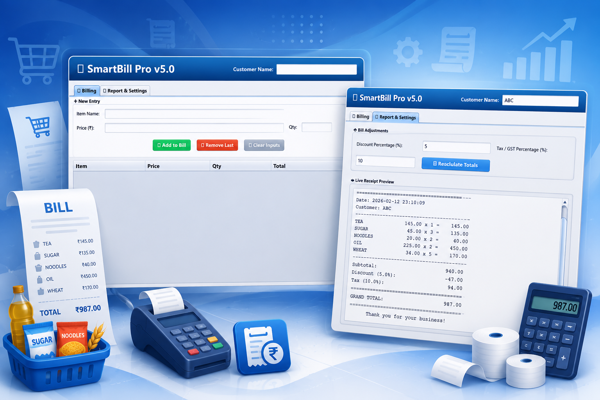
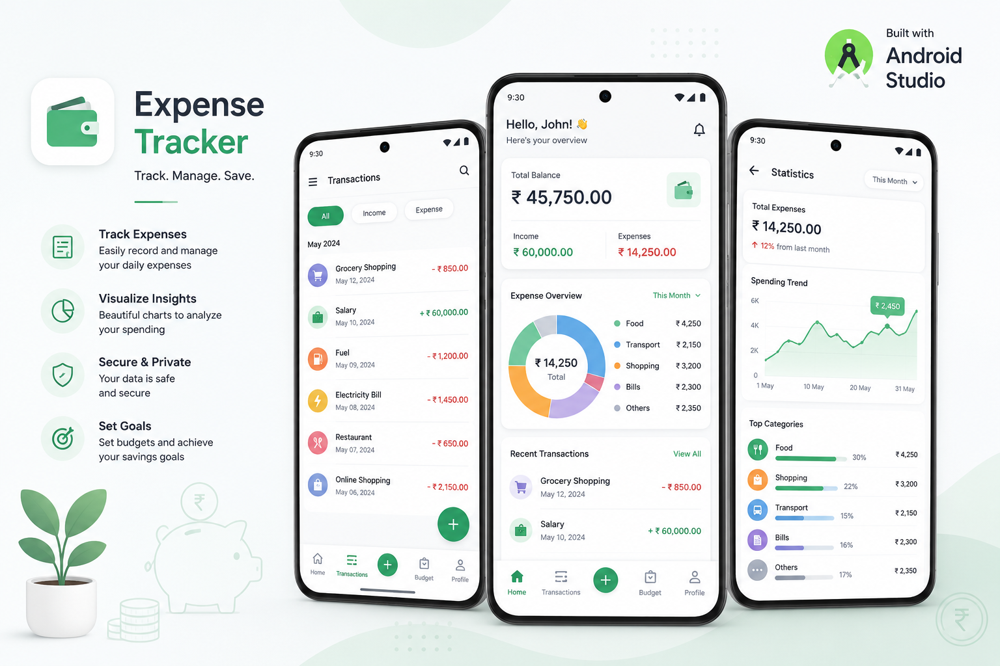
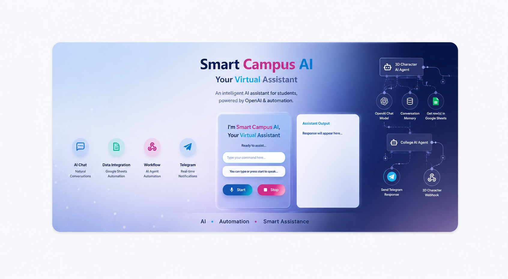
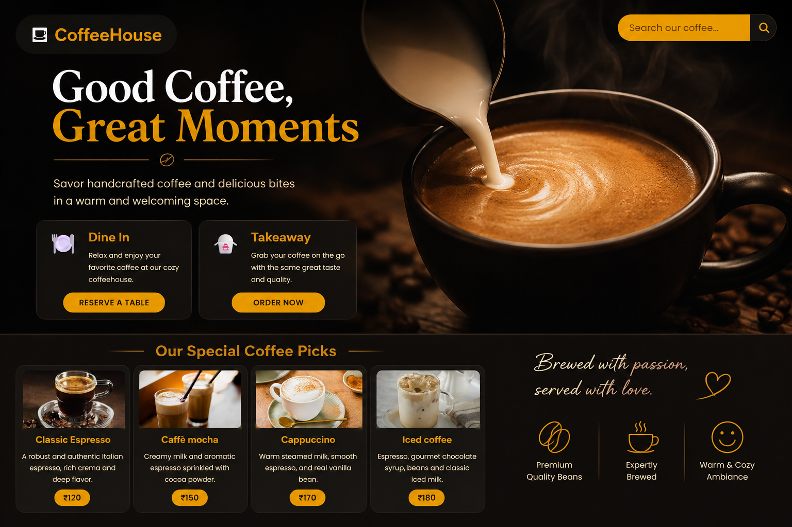
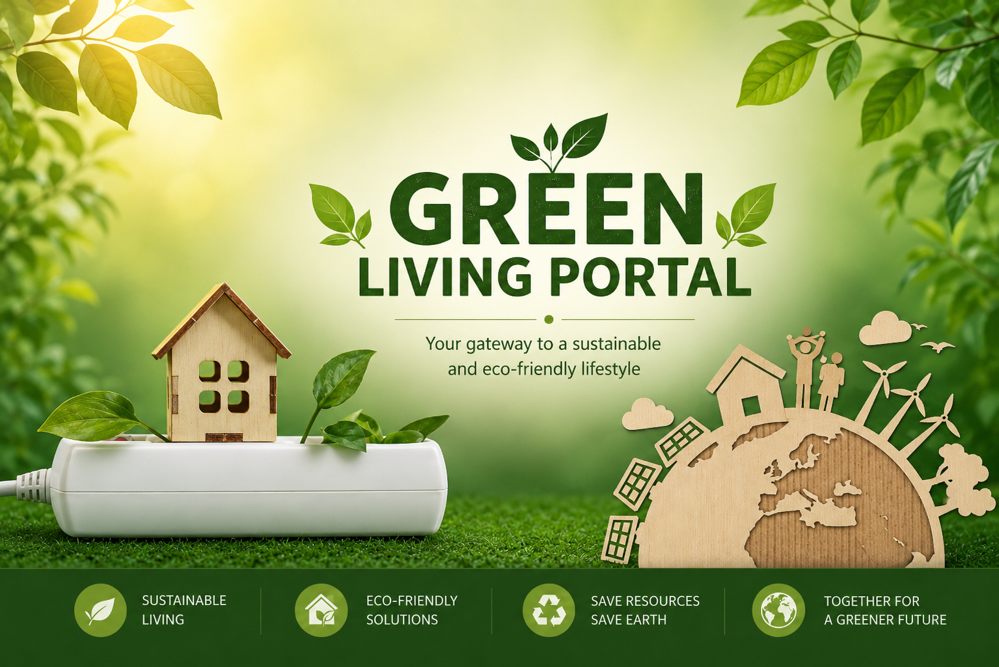
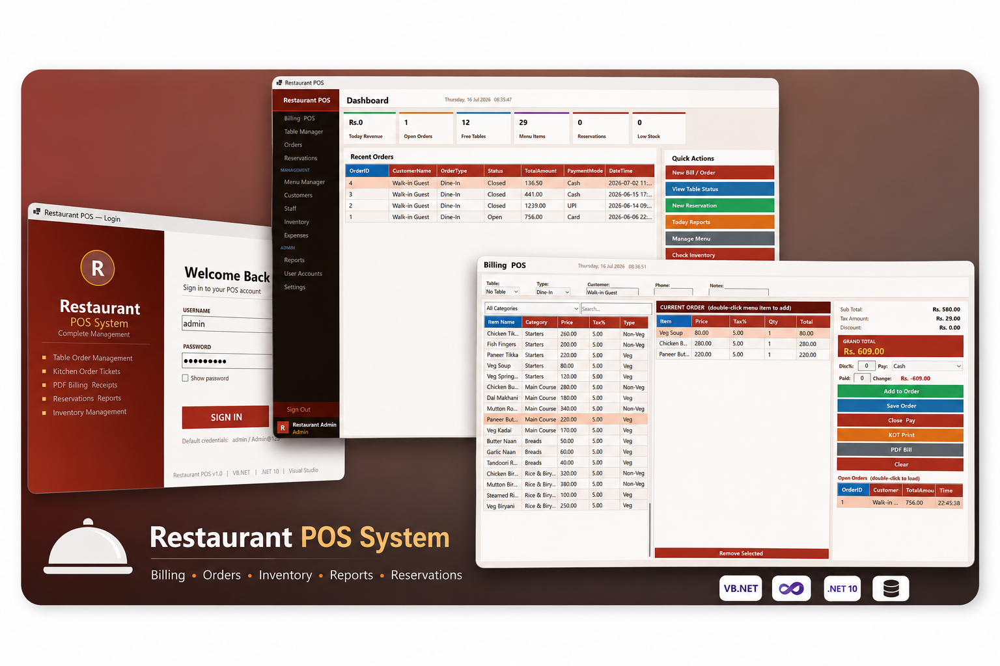

A modern Task Management Web Application built using Java Servlet, JSP, JDBC, MySQL, and following MVC Architecture.
A comprehensive Java Swing-based Bank Management System with MySQL database connectivity.

A robust, user-friendly Point of Sale (POS) and billing management application built using Java Swing.

A modern Android Expense Tracker application built using Java and Android Studio. This application helps users manage their daily expenses efficiently with a clean Material Design UI and smooth user experience.

Built a Smart Campus Assistant that integrates a web interface and a Telegram bot with an n8n workflow to answer student and visitor queries about the college in real time.

Developed a responsive Coffee House website during a college hackathon using HTML, CSS, and JavaScript. The website provides an attractive user interface to showcase coffee products, menu items, special offers.

Welcome to the Eco-Friendly Living project! This website is dedicated to promoting sustainable living practices and empowering individuals and communities to make eco-conscious choices.

About Restaurant POS is a desktop-based billing and management system. It features POS billing, table, menu, inventory, customer, staff, reservation, and report management with secure role-based authentication.